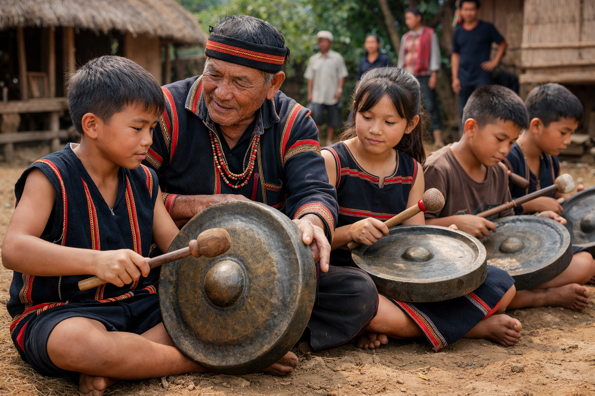

Thực trạng & Bảo tồn Cồng Chiêng Tây Nguyên
THỰC TRẠNG & BẢO TỒN HIỆN NAY

📌 Thực trạng
- Cồng chiêng dần ít xuất hiện trong sinh hoạt thường ngày của buôn làng.
- Một số bộ chiêng bị bán, thất lạc hoặc không còn người biết đánh.
- Giới trẻ ít tham gia hơn trước.
🌿 Bảo tồn
- UNESCO công nhận “Không gian văn hóa cồng chiêng Tây Nguyên” (2005).
- Tổ chức lễ hội, festival cồng chiêng hằng năm.
- Mở lớp truyền dạy đánh chiêng cho thanh thiếu niên.
- Thành lập câu lạc bộ cồng chiêng tại nhiều buôn làng.
⬅ Quay về Trang chủ